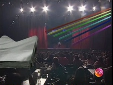
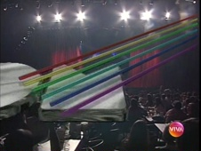
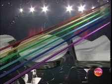
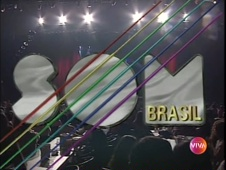

Som Brasil
Som Brasil não tinha abertura fixa, mas era introduzido por uma vinheta com a animação de sua logo.
padrão anos 1 e 2
padrão anos 3 e 4
- 
- 
- 
- 
Som Brasil não tinha abertura fixa, mas era introduzido por uma vinheta com a animação de sua logo.